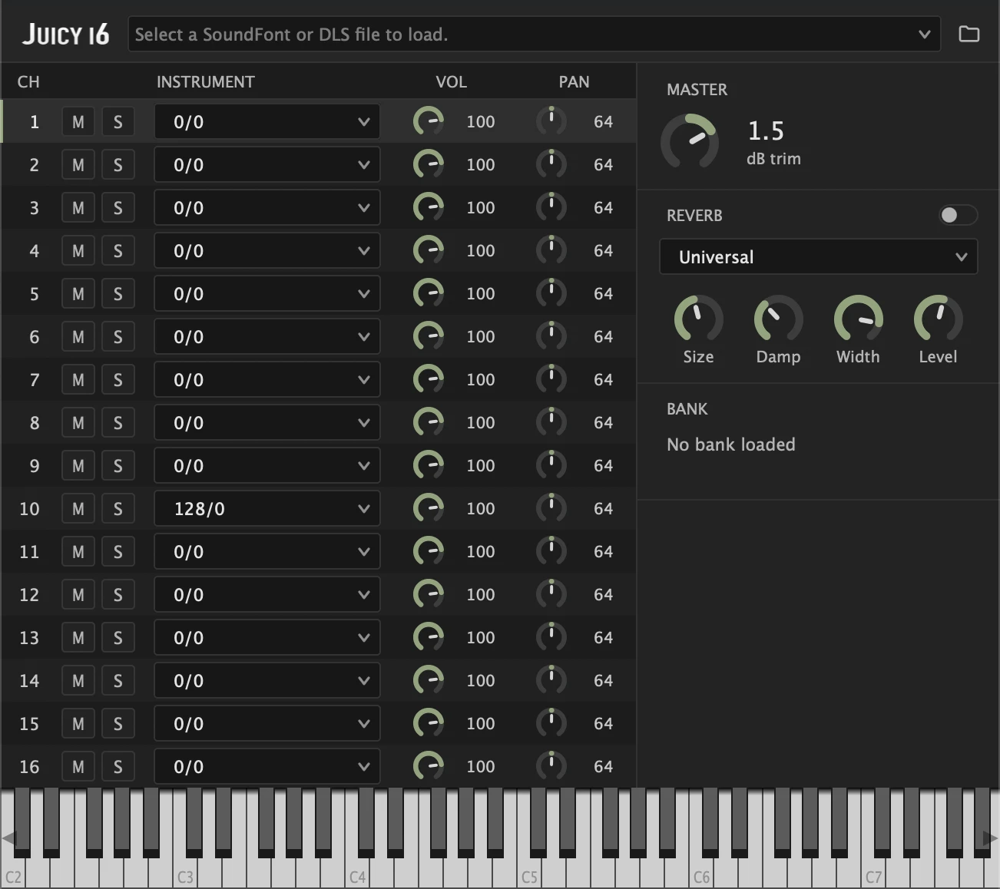

Juicy16
Juicy16
A free 16-channel SoundFont and DLS player for macOS, in AU and VST3. One instance plays a multichannel MIDI file out of a single bank, with each channel on the instrument the file asks for. I wrote it to play game music rips without setting patches by hand.
Download
Beta 1. AU and VST3 in one archive, with an installer.
Version 0.6.0-beta.1 · 6.6 MB · Apple Silicon
What you need
- macOS 11 or later on an Apple Silicon Mac (Windows support very soon). Intel is not supported.
- A host that loads AU or VST3.
The installer is not signed, so macOS blocks it the first time. Right-click install_macos.command, choose Open, then Open again. Quit and reopen your DAW afterwards.

What it does
One instance handles all sixteen MIDI channels.
- Sixteen channels, each with its own bank, preset, volume, pan, mute and solo, all visible at once.
- Program Changes are followed as they arrive, mid-song ones included, so the file picks its own instruments. Channel 10 is GM percussion by default, melodic bank 0 elsewhere.
- Every CC, 14-bit pitch bend, RPN bend range, pressure and pedals. Events are timed to the sample, not to the start of the audio block.
- GM, GS and XG resets are recognised, and the channel setup comes back afterwards.
Reporting a bug
Per-channel Program Change works in FL Studio and Cubase, in both formats, and the Audio Unit passes Apple's validator. These are untested:
- macOS 11 itself. The binaries are built for it, but nothing has booted on it.
- Logic Pro, or any AU host other than FL Studio.
- Any VST3 host other than FL Studio and Cubase.
- Installing on a Mac that is not mine.
Report sent. I’ll follow up by email if I need more.